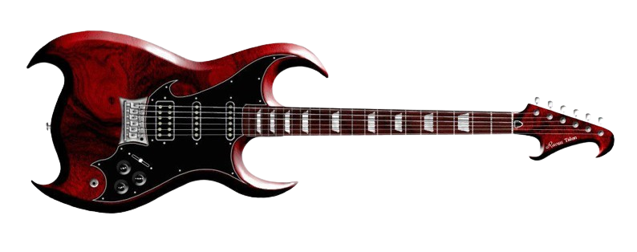

El Black Metal es un subgénero extremo del Heavy Metal, caracterizado por el uso de 'tremolo picking',
'blast beats' y voces desgarradas (shrieks).
Surgió principalmente en la escena
noruega de los años 90 (Second Wave) y se define por su estética cruda,
líricas oscuras, anticristianas y paganas.
VOLVER MAYHEM CANNIBAL CORPSE PUTRESCENT 